测试
Visual Studio Code提供了一套丰富的功能来测试你的代码。你可以自动发现项目中的测试，运行和调试测试，并获取测试覆盖率结果。VS Code中的GitHub Copilot可以帮助你为项目设置测试框架，协助生成测试代码并修复失败的测试。
在本文中，你将了解如何在VS Code中开始测试，找到流行的测试扩展，并探索测试功能。你还将了解VS Code中的Copilot如何帮助你更快地编写测试，以及协助你修复失败的测试。
[!TIP]
如果你还没有Copilot订阅，可以通过注册Copilot免费计划免费使用Copilot。你将获得每月的行内建议额度和AI积分。
关于VS Code中的测试
VS Code中的测试支持是特定于语言的，取决于你安装的测试扩展。语言扩展或独立扩展可以为特定语言或测试框架实现测试功能。
VS Code具有以下用于测试代码的功能：
- 支持多种测试框架：语言扩展和独立测试扩展为各种语言和测试运行器提供支持，例如Jest、Mocha、Pytest、JUnit等。
- 集中式测试管理：测试资源管理器提供一个集中式的位置来管理和运行项目中的测试。根据测试扩展的不同，测试资源管理器可以自动发现项目中的测试。
- 集成的测试结果：在编辑器内与测试代码一起以行内方式查看测试状态，或在测试资源管理器中查看所有测试。详细的测试结果可在测试结果面板中查看。
- 调试：调试你的测试以诊断测试失败的原因。充分利用VS Code中丰富的调试支持功能，例如断点、监视变量等。
- 测试覆盖率：带覆盖率运行测试，查看你的代码有多少被测试覆盖。
- AI辅助测试：使用VS Code中的GitHub Copilot帮助你设置测试框架、生成测试代码以及修复失败的测试。
- 任务集成：通过创建用于运行测试的任务使测试工作更加轻松。你还可以在更改代码时在后台运行测试。
开始在VS Code中进行测试
要开始在VS Code中进行测试，请执行以下步骤：
- 打开扩展视图并安装一个适合你项目的测试扩展。按Testing类别（_@category:"testing"_）筛选扩展。
- 选择活动栏中的烧杯图标（）打开测试资源管理器，并发现项目中的测试。
- 从测试资源管理器或直接在编辑器中运行和调试你的测试。
测试扩展
你可以在Visual Studio Marketplace中查找支持测试的扩展。你也可以转到扩展视图（kb(workbench.view.extensions)），并按Testing类别进行筛选。
[!TIP]
Copilot可以帮助你设置测试框架并推荐相关的测试扩展。打开聊天视图（kb(workbench.action.chat.open)），输入/setupTests命令，Copilot将引导你完成项目配置的过程。
测试视图中的自动测试发现
测试视图提供了一个集中式的位置来管理和运行你的测试。你可以通过选择活动栏中的烧杯图标（）进入测试视图。你也可以在命令面板（kb(workbench.action.showCommands)）中使用Testing: Focus on Test Explorer View命令。
如果你有一个包含测试的项目，测试资源管理器视图会发现并列出工作区中的测试。默认情况下，发现的测试以树视图的形式显示在测试资源管理器中。树视图与你的测试层级结构相匹配，便于你导航和运行测试。
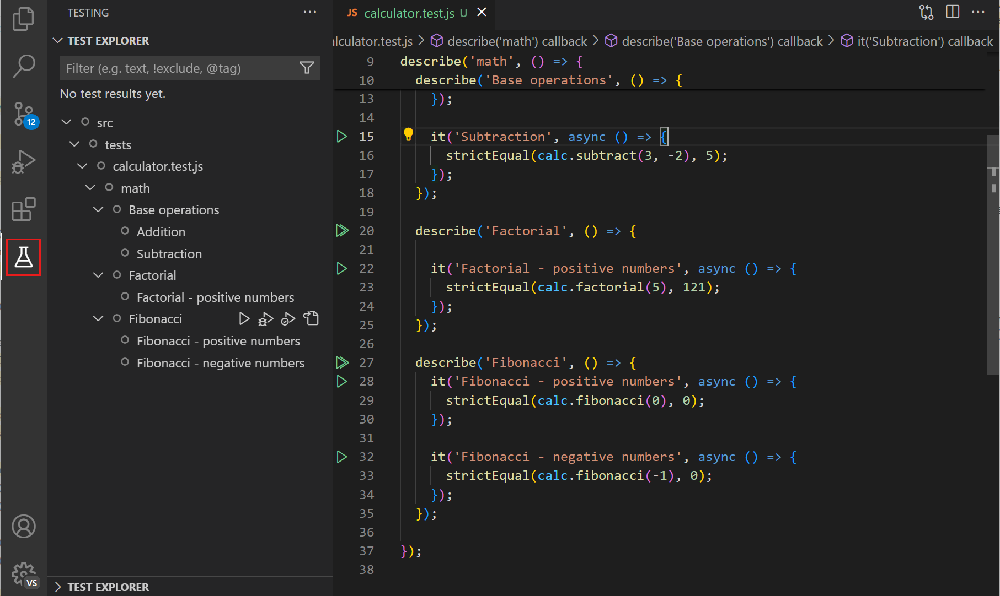
你可以通过选择播放按钮从测试资源管理器运行测试。在运行和调试测试部分了解更多关于运行和调试测试的信息。
[!TIP]
双击测试资源管理器视图中的测试可以导航到测试代码。如果你选择一个失败的测试，编辑器将打开测试文件，高亮显示失败的测试，并显示错误消息。
如果你有很多测试，可以使用筛选选项快速找到你感兴趣的测试。你可以使用筛选器按钮按状态筛选测试，或仅显示当前文件的测试。你还可以使用搜索框按名称搜索特定测试，或使用@符号按状态搜索。
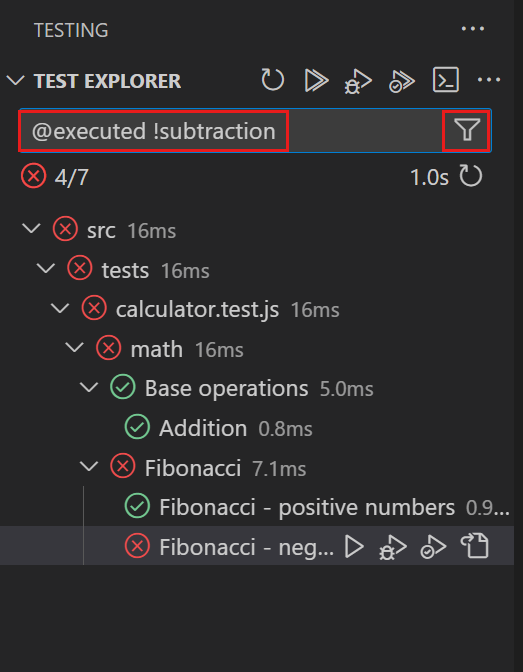
在更多操作菜单中，你可以访问更多功能，例如排序和显示选项。
如果你添加新测试或更改测试，请使用刷新测试按钮刷新测试资源管理器中的测试列表。你也可以在命令面板（kb(workbench.action.showCommands)）中使用Test Explorer: Reload tests命令。
[!NOTE]
根据测试扩展的不同，你可能首先需要配置测试框架或测试运行器以发现项目中的测试。有关更多信息，请参阅测试扩展的文档。你可以在Copilot聊天视图中使用setupTests命令来获取设置项目测试框架的帮助。
使用AI编写测试
编写测试可能非常耗时，并且经常被忽视。Copilot可以通过为你的应用程序创建测试代码来加快编写测试的速度。你可以用它来编写单元测试、集成测试、端到端测试等。
要在VS Code中使用Copilot编写测试，你可以使用以下任一方法：
- 编辑器智能操作
- 可选地，选择一块应用程序代码
- 在编辑器中右键单击，然后选择Copilot > Generate Tests
- 可选地，选择一块应用程序代码
- 打开要为其生成测试的应用程序代码文件
- 打开Copilot编辑（
kb(workbench.action.chat.openEditSession)）、聊天视图（kb(workbench.action.chat.open)）或编辑器行内聊天（kb(inlineChat.start)） - 输入提示来生成测试，例如_为此代码生成测试。同时包括边缘情况的测试。_
- 打开Copilot编辑（
通过在提示中键入#file来添加额外的上下文。例如，_为此代码生成测试 #file:calculator.js_
[!TIP]
在GitHub Copilot文档中获取更多示例提示，用于生成单元测试、模拟对象或端到端测试。
Copilot将为你的应用程序代码生成测试用例代码。如果你已经有一个测试文件，Copilot会将测试添加到那里，或者在需要时创建一个新文件。你可以通过向Copilot提供更多提示进一步自定义生成的测试。例如，你可以要求Copilot使用另一个测试框架。
[!TIP]
你可以为Copilot提供你自己的代码生成特殊指令。例如，你可以告诉Copilot使用特定的测试框架、命名约定或代码结构。
了解更多关于在VS Code中使用Copilot的信息。
运行和调试测试
在发现项目中的测试之后，你可以直接从VS Code内运行和调试测试，并查看测试结果。
在测试资源管理器中，使用节标题中的控件来运行或调试所有测试。你还可以通过选择特定节点上的运行/调试图标来运行或调试树视图中的特定测试。
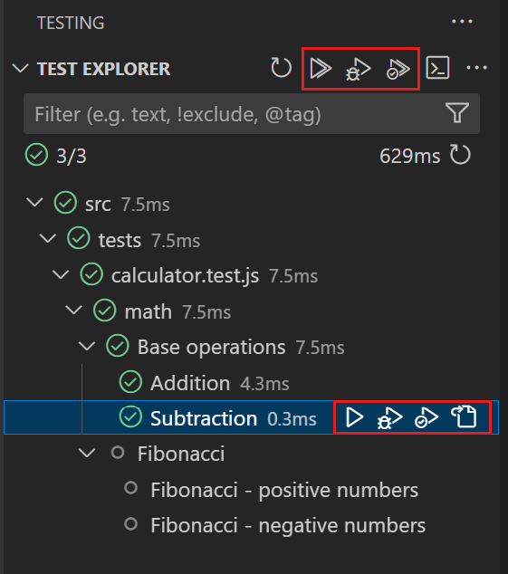
在编辑器中查看测试代码时，使用编辑器装订线中的播放控件来运行该位置的测试。
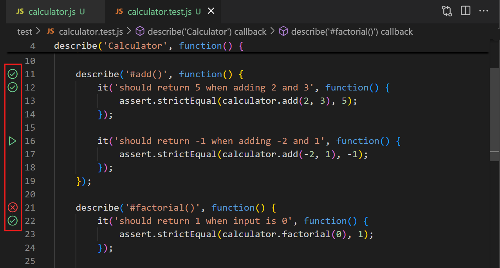
右键单击装订线控件以查看其他操作，例如调试测试。
[!TIP]
使用setting(testing.defaultGutterClickAction)设置来配置装订线控件的默认测试操作。
在运行一个或多个测试后，编辑器装订线和测试资源管理器中的树视图会显示相应的测试状态（通过/失败）。当测试失败时，请注意测试错误消息会作为覆盖层显示在编辑器中。
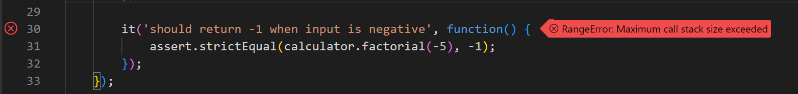
使用测试资源管理器中的显示输出按钮在测试结果面板中查看测试输出。
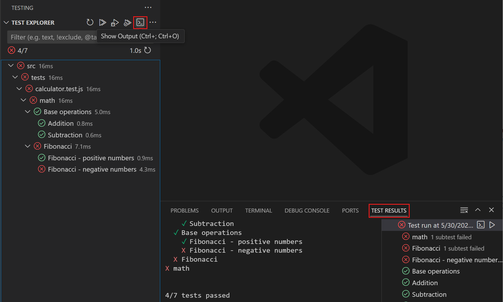
[!TIP]
Copilot可以帮助你修复失败的测试。在测试资源管理器中，将鼠标悬停在树视图上，选择修复测试失败按钮（_sparkle_），Copilot将为失败的测试建议修复方案。或者，在Copilot聊天中输入/fixTestFailure命令。
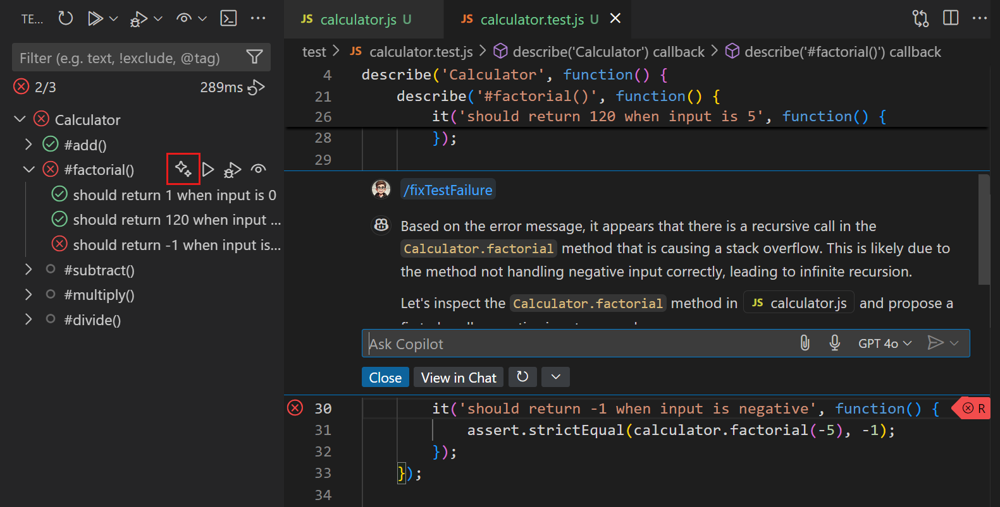
测试覆盖率
测试覆盖率是衡量你的代码有多少被测试覆盖的指标。它可以帮助你识别代码中未被测试的部分。如果相应的测试扩展支持测试覆盖率，VS Code支持带覆盖率运行测试并查看覆盖率结果。
你可以带覆盖率运行测试，就像运行和调试测试一样。使用测试资源管理器视图、编辑器装订线中对应的操作，或命令面板（kb(workbench.action.showCommands)）中的命令。
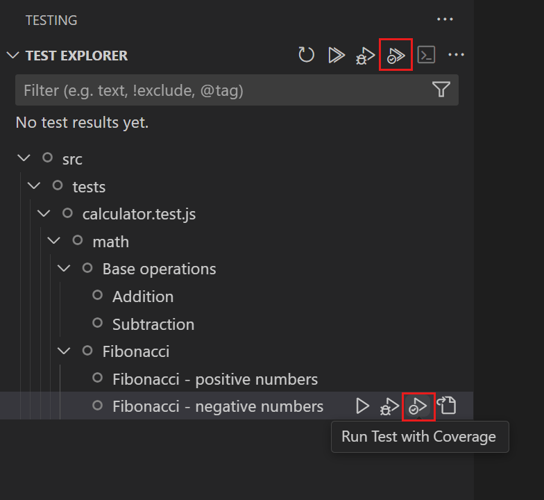
带覆盖率运行测试后，你可以在以下不同位置查看覆盖率结果：
- 在测试覆盖率视图中
树视图显示测试及其覆盖率百分比。颜色指示器也对覆盖率百分比提供视觉提示。将鼠标悬停在各行上以查看有关覆盖率结果的更多详细信息。
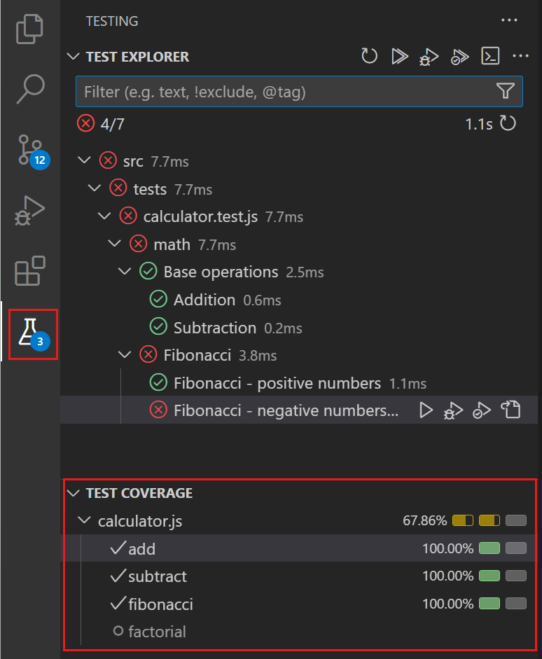
- 作为编辑器中的覆盖层
对于具有测试覆盖率的代码文件，编辑器在装订线中显示颜色覆盖层，指示哪些行被测试覆盖或未被覆盖。当你将鼠标悬停在装订线上时，请注意对于已覆盖的行，还有一个指示该行执行次数的指示器。你还可以选择编辑器标题栏中的显示行内覆盖率按钮，或使用Test: Show Inline Coverage命令（kb(testing.toggleInlineCoverage)）来切换覆盖率覆盖层。
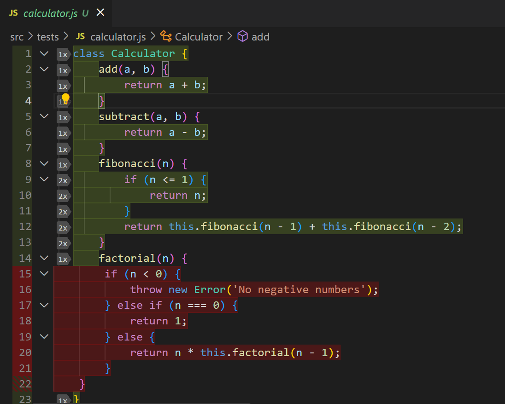
- 在资源管理器视图中，显示代码文件的覆盖率百分比
资源管理器视图显示代码文件的覆盖率百分比。将鼠标悬停在资源管理器中的文件或节点上，以查看有关覆盖率结果的更多详细信息。
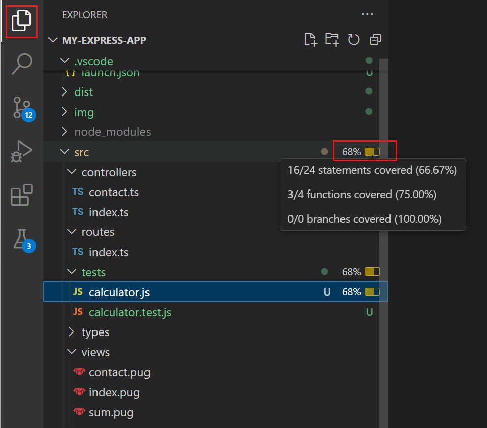
- 在差异编辑器中
如果你打开了一个差异编辑器，覆盖率结果也会显示在差异编辑器中，类似于它们在编辑器中的显示方式。
- 在测试覆盖率工具栏中
编辑器中的测试覆盖率工具栏显示测试覆盖率结果，允许你在未覆盖的代码块之间导航，并切换行内覆盖率。使用setting(testing.coverageToolbarEnabled)设置启用测试覆盖率工具栏。
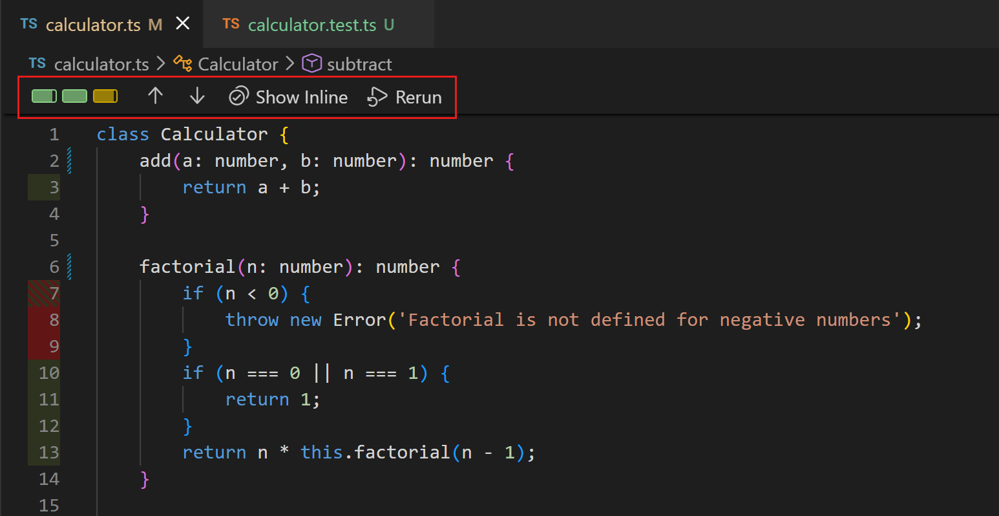
任务集成
VS Code中的任务可以配置为在VS Code内运行脚本和启动进程，而无需输入命令行或编写新代码。在VS Code中，你可以定义一个默认测试任务来运行测试，还可以创建键盘快捷键来运行测试。
使用命令Tasks: Configure Default Test Task来配置默认测试任务。VS Code会尝试自动检测测试任务，例如基于你的package.json文件。选择默认测试任务后，tasks.json文件会打开供你自定义任务。
以下代码片段展示了一个指定node --test命令作为默认测试任务的tasks.json文件。
{
"version": "2.0.0",
"tasks": [
{
"type": "npm",
"script": "test",
"group": {
"kind": "test",
"isDefault": true
},
"problemMatcher": [],
"label": "npm: test",
"detail": "node --test src/tests/**.js"
}
]
}要运行测试任务，请使用命令Tasks: Run Test Task或为此命令创建键盘快捷键。
了解更多关于使用和配置任务的信息。
[!NOTE]
目前，任务没有与VS Code的测试功能进行特殊集成，因此在任务中运行测试不会更新用户界面。各个测试扩展可以提供集成到UI中的特定测试自动化功能。
测试配置设置
你可以配置多个设置来自定义VS Code中的测试体验。每种语言扩展可能提供特定于该语言测试的额外设置。以下是一些你可以配置的常见设置：
| 设置ID | 详细信息 | ||
|---|---|---|---|
| - | - | ||
setting(testing.countBadge) | 控制活动栏上测试图标上的计数徽章 | ||
setting(testing.gutterEnabled) | 配置是否在编辑器装订线中显示测试控件 | ||
setting(testing.defaultGutterClickAction) | 配置选择装订线测试控件时的默认操作 | ||
setting(testing.coverageBarThresholds) | 配置测试覆盖率视图的覆盖率条形阈值颜色 | ||
setting(testing.displayedCoveragePercent) | 配置在测试覆盖率视图中显示的百分比值（总计、语句或最小值） | ||
setting(testing.showCoverageInExplorer) | 配置是否在资源管理器视图中显示覆盖率百分比 |
你可以在设置编辑器（kb(workbench.action.openSettings)）中找到所有与测试相关的设置。
后续步骤
- 开始在Python、Java或C#中进行测试
- 了解更多关于Copilot和VS Code中的AI辅助测试的信息
- 了解更多关于使用和配置任务的信息